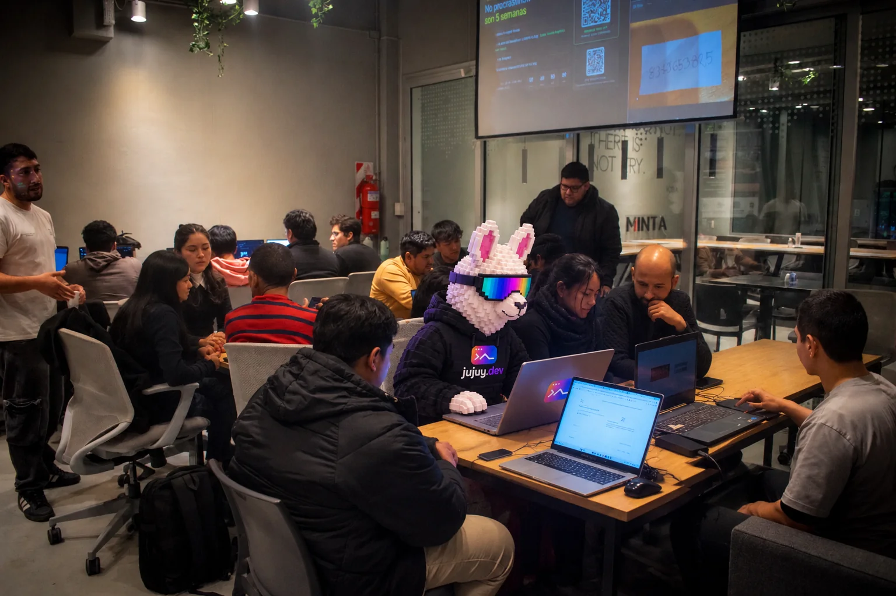
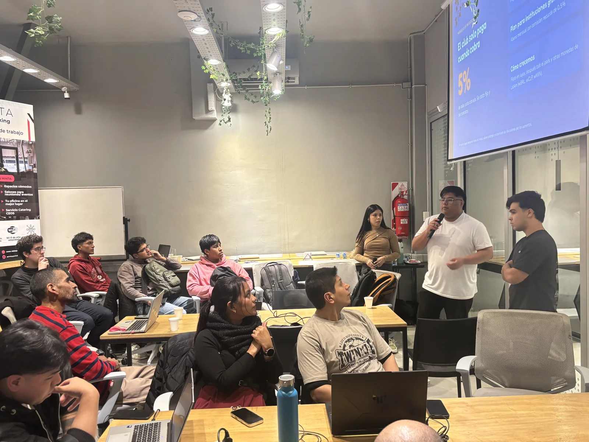
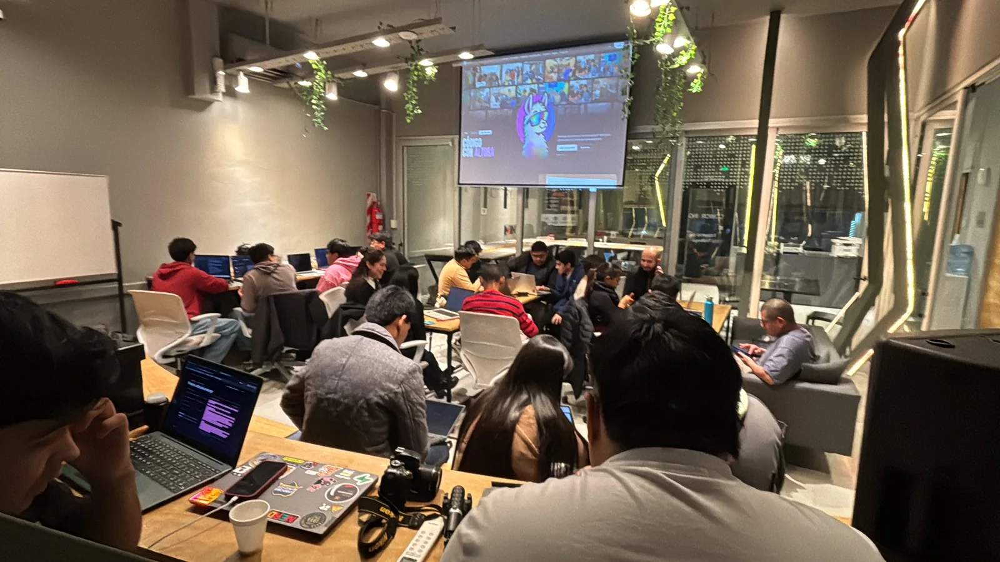

Eventos
Meetups, talleres y hackatones de la comunidad tech de Jujuy. Presenciales en San Salvador de Jujuy o virtuales.
Lo que
viene
Cuando publiquemos un encuentro, aparece acá. Mientras tanto, mirá el calendario en Luma →
¿Tenés una idea para el que sigue?
Charlas, talleres, hackatones o una juntada para tomar algo. Si querés organizar o dar una charla, contanos.
Últimos encuentros
Así se vivió



Comunidad abierta
No te pierdas
No te pierdas
el próximo
Anunciamos cada encuentro primero en el grupo de WhatsApp y en @jujuy.dev.